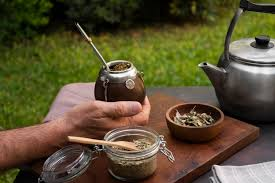

Tradiciones y Costumbres
El mate, el asado y la pasión por el fútbol son pilares fundamentales en la vida cotidiana de los argentinos. Las reuniones familiares y sociales giran en torno a estas costumbres, fortaleciendo los lazos entre amigos y seres queridos. El mate, por ejemplo, no solo es una bebida sino un símbolo de compartir. El asado es más que una comida: es una ceremonia que representa hospitalidad y tradición. Además, el fútbol despierta emociones profundas y une a personas de todas las edades en cada partido, con figuras históricas como Maradona y Messi marcando generaciones enteras.
